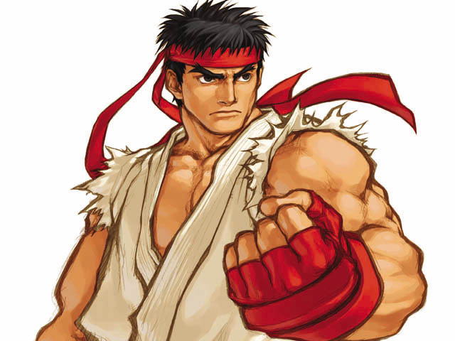

Ryu is the quintessential "basic" character in fighting games with an intuitive array of punches and kicks, and very basic special moves.
This simplicity makes Ryu a favorite for beginner and intermediate players. Ryu is available in every single Street Fighter game, allowing players familiar with previous Street Fighter games to begin playing immediately, without having to worry about learning how to use a new character, however, there are a few tweaks in his moveset which vary depending on the game. Ryu is usually a silent, serious individual whose severity is often juxtaposed against the light-hearted, fiery persona of his best friend, Ken. He travels the globe with a stern nature, often appearing to others as boring or detached. In rare occasions, Ryu shows a very bad sense of humor
Ryu is a Japanese stock character, the "wandering warrior": a person whose life is entirely devoted to spiritual perfection through the art of the fist. He does not care about winning or losing so much as the moment of the fight and the opportunity for spiritual advancement. Ryu was an orphaned baby, with no knowledge of who his parents were or if they are still alive. When Ryu was a baby, he was adopted by a man named Gouken and began living with him as well as learning a mysterious and dangerously powerful nameless martial art. Gouken would later get the bratty son of his best friend, Ken Masters, not only as a sparring partner for Ryu, but to also give Ryu some company since Gouken was the only person Ryu had seen in a long time due to the seclusion of Gouken's dojo. Ryu looked up to Gouken as a father figure during his early years and Ken as a best friend and surrogate brother, which is how their relationship remains to this day. When Ryu was about 23 years old, Gouken thought that Ryu was ready to travel the world in order to test his skills against the best fighters in the world. With this, Ryu left Gouken and Ken, and headed to fight in the first World Warrior tournament.